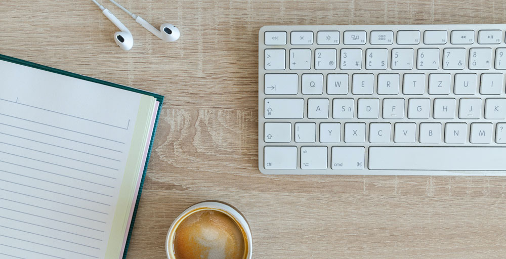

About me
 Photo by Lukas Blazek on UnsplashI am a first generation college student and budding designer. Art was always a priority in my childhood, but life's responsibilities led me along a more logical and practical path for many years. Recently I have been exploring a new path that will lead me back to the artistic person I started out to be.